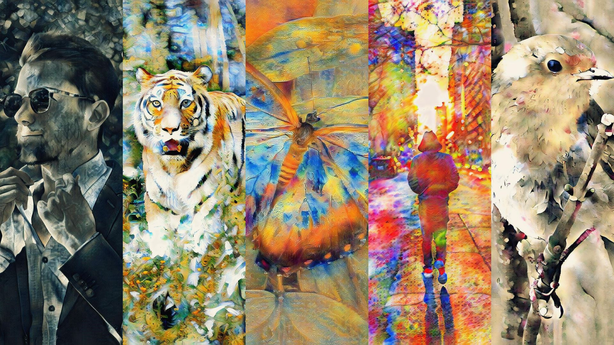

All about media.
The Infusion press kit.
If you're interested in Infusion, don't hesitate to contact us. On this page, you'll find a range of relevant materials. If you end up writing about us, we'd appreciate if send an email just to let us know. Please contact us for a custom preview build of Infusion at insightfulai@gmail.com.
Add a splash of colour
to your site.

High-definition images generated by Infusion, as well as official promotional artworks, are available for download below. You are free to use these images for commercial images as long as you credit Insightful AI and Infusion.
Additionally, you are also free to use any image on this site, provided you credit Infusion and Insightful AI.
Contact details.
Reach out to us.
To contact us, please fill out the media contacts form below. If you prefer email, you can also email insightfulai@gmail.com.
Quick facts
about Infusion.
Infusion is the world's first fully offline AI art app. It can generate an infinite stream of artworks based on any artistic style from your photos. With infinite artworks and infinite styles, infusion is designed for creatives worldwide who love to experiment and challenge the status quo. Utilising the state-of-the-art technology in neural style transfer - a technique involving machine learning and artificial intelligence, Infusion is one of the most advanced ways of creating art ever.
Quick facts
about Insightful AI.
At Insightful AI, we are innovators and rulebreakers who want to change how artificial intelligence is used to empower people. Compared to large corporations using AI, we want to create private and practical tools that give users control over the technologies used. Our aim is to challenge industrial norms regarding of quality and data collection practices of AI applications, by creating an AI art app that outputs better results than our competitors while being completely offline.